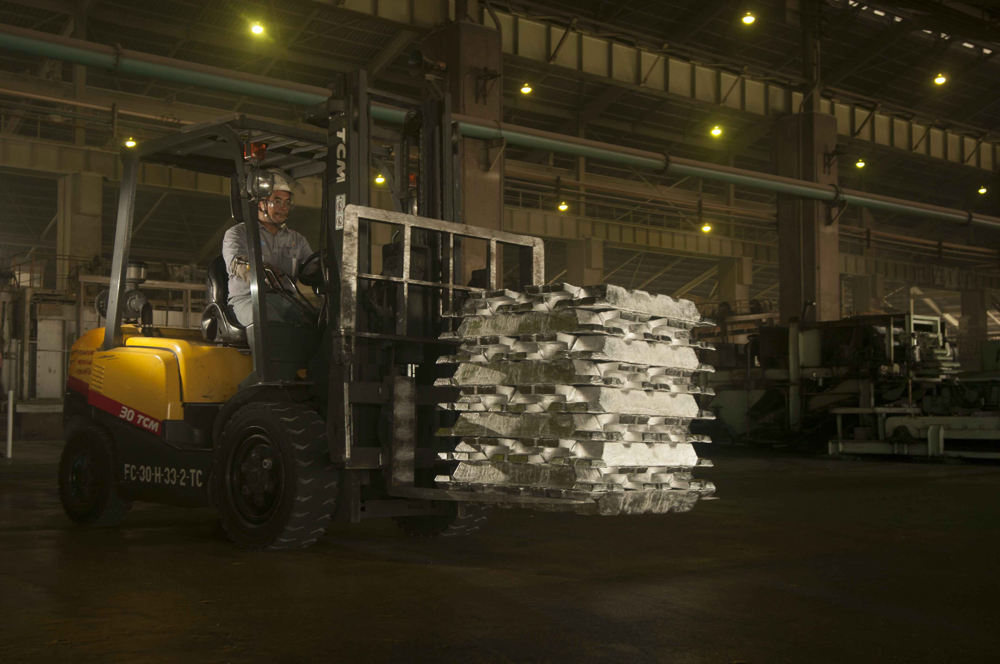
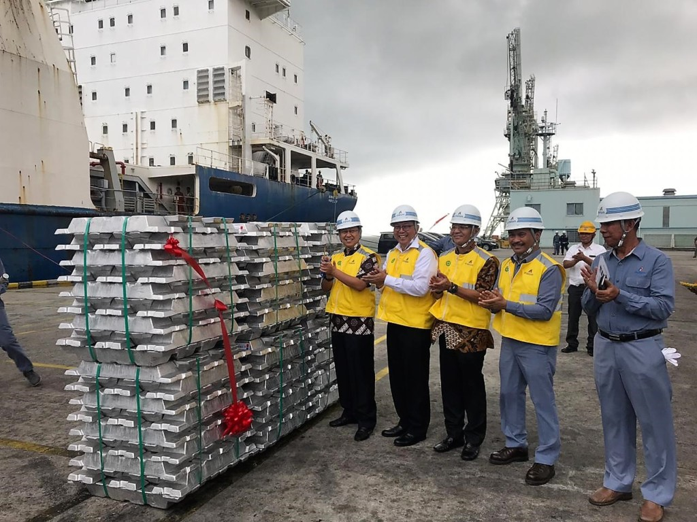
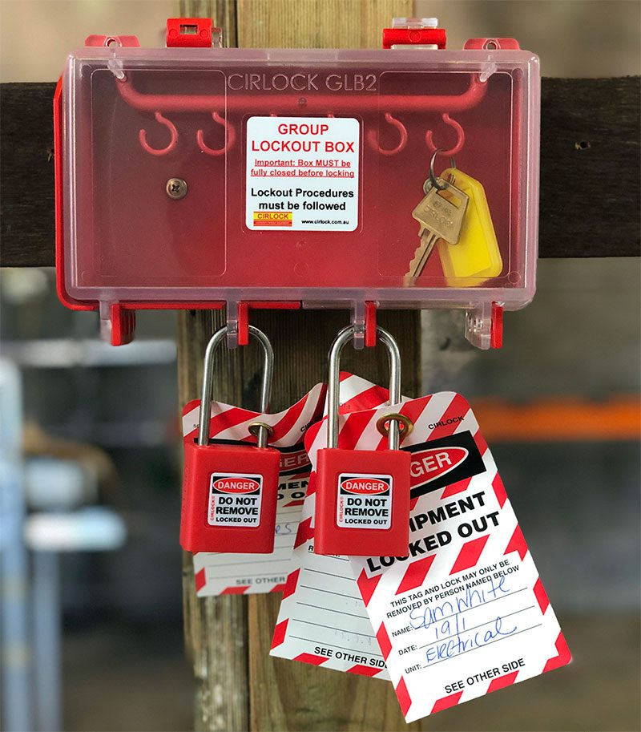

Keselamatan Kerja
Keselamatan & Kesehatan Kerja di PT INALUM
Mewujudkan lingkungan kerja yang aman, produktif, dan bebas kecelakaan melalui penerapan budaya K3.
Identifikasi Bahaya & Prosedur Kerja Aman
Setiap pekerjaan dimulai dengan Identifikasi Bahaya (*Hazard Identification*) untuk menilai risiko potensial. Prosedur ini krusial di area industri berat seperti peleburan aluminium.
- Identifikasi Bahaya: Proses proaktif mengenali sumber bahaya, dari bahan kimia hingga kondisi fisik alat/area kerja.
- Prosedur Kerja Aman (SOP): Langkah-langkah detail dan wajib dipatuhi untuk melaksanakan tugas tanpa menimbulkan risiko kecelakaan.
- Semua pekerjaan berisiko tinggi harus memiliki izin kerja (*Permit to Work*) yang disetujui.
- Pelaporan insiden dan nyaris celaka (*Near Miss*) wajib dilakukan untuk analisis akar masalah dan pencegahan.

Keselamatan Kebakaran & Listrik
Pengendalian bahaya kebakaran (*Fire Safety*) dan listrik (*Electrical Safety*) merupakan prioritas utama mengingat lingkungan operasional yang kompleks dan melibatkan energi tinggi.
- Fire Safety: Penempatan APAR, instalasi *hydrant*, sistem deteksi asap/panas, dan pelatihan penggunaan alat pemadam.
- Jalur evakuasi dan titik kumpul harus selalu bebas hambatan.
- Electrical Safety: Seluruh instalasi listrik harus diinspeksi rutin. Gunakan APD listrik (sarung tangan, sepatu dielektrik) saat bekerja dengan tegangan tinggi.
- Pekerjaan listrik wajib dilakukan oleh teknisi bersertifikat.

LOTO (Lock Out Tag Out)
LOTO adalah prosedur kritis untuk memastikan bahwa mesin atau peralatan berbahaya dinonaktifkan sepenuhnya dan tidak dapat dihidupkan kembali secara tidak sengaja sebelum pekerjaan perawatan atau perbaikan selesai.
- Lock Out: Mengunci sumber energi (listrik, hidrolik, pneumatik) untuk mencegah pelepasan energi berbahaya.
- Tag Out: Menempelkan label peringatan pada kunci yang mengidentifikasi siapa yang mengunci dan mengapa.
- Wajib diterapkan saat melakukan pemeliharaan pada mesin yang memiliki potensi energi tersimpan.
- Hanya karyawan yang memasang kunci yang berhak melepas kunci tersebut.

Komitmen & Budaya K3
PT INALUM mendorong terciptanya budaya kerja yang aman dan saling peduli (*Safety Culture*) serta memiliki sistem Tanggap Darurat yang teruji.
- Pelaksanaan simulasi evakuasi minimal dua kali setahun.
- Setiap karyawan wajib mengikuti pelatihan dan audit K3 berkala.
- Kenali lokasi jalur evakuasi, titik kumpul, dan APAR terdekat.
- Komitmen manajemen terhadap prinsip “Zero Accident” adalah prioritas utama.